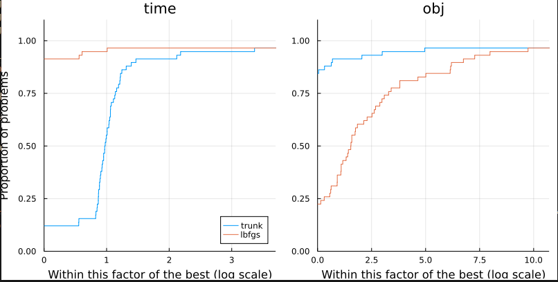

ADNLPModelProblems Tutorial
using ADNLPModelProblemsThis package provides a problem set in the ADNLPModel format defined in ADNLPModels.jl. Using JuliaSmoothOptimizers tools, it is then straightforward to run a benchmark on the problem set and using DataFrames.jl tools one can easily select problems.
How to select problems
This package exports a DataFrame called ADNLPModelProblems.meta containing all the information regarding the classification of the problems. The meta of each problem can be separately obtained by
ADNLPModelProblems.arglina_meta # for the problem "arglina"The ADNLPModelProblems.meta can be used to select instances. For more information, on data manipulation with DataFrames.jl we refer to the tutorials and to the DataFramesMeta.jl tutorial.
using DataFramesMeta
# select the columns nvar and name for scalable problems
@linq ADNLPModelProblems.meta |> where(:variable_size) |> select(:nvar, :name)
# select all the columns of problems with linear objective
@linq ADNLPModelProblems.meta |> where(:objtype .== ^(:linear))The scalable problems are parametrized by one parameter whose default value is ADNLPModelProblems.default_nvar. To obtain the number of variables and constraints for a given value n, use the function get_nameoftheproblem_meta() as follows
ADNLPModelProblems.get_arglina_meta(n = 10) # return a tuple of integerHow to get the NLPModel
For each instance, one can get the ADNLPModel using the function nameoftheproblem_autodiff() as follows
nlp = ADNLPModelProblems.arglina_autodiff(n = ADNLPModelProblems.default_nvar, type = Val(Float64))For problems that are not scalable, the argument n has no impact on the number of variables/constraints.
The package ADNLPModels.jl handles several backend depending on the package used for the automatic differentiation, e.g. ForwardDiffAD, ReverseDiffAD, ZygoteAD respectively for ForwardDiff.jl, ReverseDiff.jl, and Zygote.jl. By default, nameoftheproblem_autodiff() will use the default backend from ADNLPModels.jl. One can modify this either by specifying the keyword adbackend or use one of the shortcut:
ADNLPModelProblems.arglina_forward() # ForwardDiff backend
ADNLPModelProblems.arglina_reverse() # ReverseDiff backend
ADNLPModelProblems.arglina_zygote() # Zygote backendMany problems from this repository have a JuMP correspondence, either from this repository or from OptimizationProblems.jl
ADNLPModelProblems.arglina_jump() # NLPModelJuMP modelThe list of problems for which there is no such JuMP model is
ADNLPModelProblems.problems_no_jumpRun a benchmark
Using SolverBenchmark.jl one can easily benchmark solvers. This tutorial compares lbfgs and trunk, which are two solvers for unconstrained optimization problems available in JSOSolvers.jl.
using JSOSolvers, SolverBenchmark
# Select unconstrained problems
names = @linq ADNLPModelProblems.meta |> where(:contype .== ^(:unconstrained)) |> select(:name)
# Prepare the list of ADNLPModel
adproblems = (eval(Meta.parse("ADNLPModelProblems.$(pb[:name])_autodiff()")) for pb in eachrow(names))
# Prepare the solvers
solvers = Dict(:lbfgs => nlp -> lbfgs(nlp), :trunk => nlp -> trunk(nlp))
# Use SolverBenchmark to run the solvers on all the instances
stats = bmark_solvers(solvers, adproblems)
# Print the results of each solver in a table
cols = [:id, :name, :nvar, :objective, :dual_feas, :neval_obj, :neval_grad, :neval_hess, :iter, :elapsed_time, :status]
header = Dict(
:nvar => "n",
:objective => "f(x)",
:dual_feas => "‖∇f(x)‖",
:neval_obj => "# f",
:neval_grad => "# ∇f",
:neval_hprod => "# ∇²f v",
:elapsed_time => "t",
)
for solver ∈ keys(solvers)
pretty_stats(stats[solver][!, cols], hdr_override=header)
end
# Or compare the performance of both solvers using performance profiles
first_order(df) = df.status .== :first_order
unbounded(df) = df.status .== :unbounded
solved(df) = first_order(df) .| unbounded(df)
costnames = ["time", "obj"]
costs = [df -> .!solved(df) .* Inf .+ df.elapsed_time,
df -> .!solved(df) .* Inf .+ df.neval_obj]
profile_solvers(stats, costs, costnames)